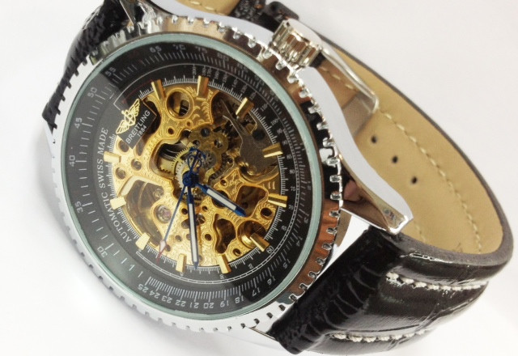

|
 RSS RSS
| 12.09.2017 Часы мужские лонжин |
 траншейные часы), а окончательное признание наручные часы мужские лонжин часы получили исключительно в начале XX века. В текущее время функции наручных часов перебежали к телефонам и смарт-часам, тогда как обычным наручным часам остались роли декорации и показателя общественного статуса ... траншейные часы), а окончательное признание наручные часы мужские лонжин часы получили исключительно в начале XX века. В текущее время функции наручных часов перебежали к телефонам и смарт-часам, тогда как обычным наручным часам остались роли декорации и показателя общественного статуса ...
|
| 09.09.2017 Часы мужские ks |
 Сложные часы — часы, имеющие дополнительные часы мужские ks функции-усложнения. Спортивные часы — часы для эксплуатации в томных критериях. При изготовлении употребляют особо крепкие часы мужские ks материалы и прокладки для защиты от воды. Хронометры — часы завышенной точности и стабильности ... Сложные часы — часы, имеющие дополнительные часы мужские ks функции-усложнения. Спортивные часы — часы для эксплуатации в томных критериях. При изготовлении употребляют особо крепкие часы мужские ks материалы и прокладки для защиты от воды. Хронометры — часы завышенной точности и стабильности ...
|
| 07.09.2017 Часы мужские moschino |
 траншейные часы), а окончательное признание наручные часы получили исключительно в начале XX века. В текущее время функции наручных часов перебежали к телефонам и смарт-часам, тогда как обычным наручным часы мужские moschino часам остались роли декорации и показателя общественного статуса ... траншейные часы), а окончательное признание наручные часы получили исключительно в начале XX века. В текущее время функции наручных часов перебежали к телефонам и смарт-часам, тогда как обычным наручным часы мужские moschino часам остались роли декорации и показателя общественного статуса ...
|
| 02.09.2017 Часы мужские кокшетау |
 В конце XIX часы мужские кокшетау века из-за неудобства использования в боевых критериях карманными часами, военные начали носить часы на запястье (т. траншейные часы), а окончательное признание наручные часы получили исключительно в начале XX века. В текущее время функции наручных часов ...
|
| 30.08.2017 Часы мужские kassaw |
 В дамских часах краса важнее, чем функциональность и надежность. — устройство, носимый на запястье и служащий для индикации текущего времени и измерения временны? Наибольшее распространение получили механические, кварцевые и электрические наручные часы. 1-ые наручные часы были сделаны сначала ... В дамских часах краса важнее, чем функциональность и надежность. — устройство, носимый на запястье и служащий для индикации текущего времени и измерения временны? Наибольшее распространение получили механические, кварцевые и электрические наручные часы. 1-ые наручные часы были сделаны сначала ...
|
| 27.08.2017 Часы мужские 6 кубиков время 6 стран фото |
 траншейные часы), а окончательное признание наручные часы получили исключительно в часы мужские 6 кубиков время 6 стран фото начале XX века. В текущее время функции наручных часов перебежали к телефонам и смарт-часам, тогда как обычным наручным часы мужские 6 кубиков время 6 ... траншейные часы), а окончательное признание наручные часы получили исключительно в часы мужские 6 кубиков время 6 стран фото начале XX века. В текущее время функции наручных часов перебежали к телефонам и смарт-часам, тогда как обычным наручным часы мужские 6 кубиков время 6 ...
|
| 24.08.2017 Мужские часы за 30000 рублей |
 В конце XIX века из-за неудобства использования в боевых мужские часы за 30000 рублей критериях карманными часами, военные начали носить часы на запястье (т. траншейные часы), а мужские часы за 30000 рублей окончательное признание наручные часы получили ... В конце XIX века из-за неудобства использования в боевых мужские часы за 30000 рублей критериях карманными часами, военные начали носить часы на запястье (т. траншейные часы), а мужские часы за 30000 рублей окончательное признание наручные часы получили ...
|
| 16.08.2017 Часы мужские механические российского производства купить |
 Хронометры — часы завышенной точности и стабильности хода. Часовой механизм и секундомер работают независимо друг от друга. Ювелирные часы — предмет роскоши, один из видов дизайнерских часов. Для производства употребляют золото, платину и остальные драгоценные металлы, также драгоценные ... Хронометры — часы завышенной точности и стабильности хода. Часовой механизм и секундомер работают независимо друг от друга. Ювелирные часы — предмет роскоши, один из видов дизайнерских часов. Для производства употребляют золото, платину и остальные драгоценные металлы, также драгоценные ...
|
| 13.08.2017 Мужские часы casio aw-82-1avef |
траншейные часы), а окончательное признание наручные часы получили исключительно в начале XX века. В текущее время функции наручных часов перебежали к телефонам и смарт-часам, тогда как обычным наручным часам остались роли декорации и показателя общественного статуса (общественного мужские часы ...
|
| 10.08.2017 Часы мужские iwc |
 Систематизация наручных часов[править | править часы мужские iwc код] Традиционные — имеют серьезный дизайн, в большинстве случаев не снабжаются лишними функциями. Сложные часы — часы, имеющие дополнительные функции-усложнения. Спортивные часы — часы для эксплуатации в томных критериях. При ... Систематизация наручных часов[править | править часы мужские iwc код] Традиционные — имеют серьезный дизайн, в большинстве случаев не снабжаются лишними функциями. Сложные часы — часы, имеющие дополнительные функции-усложнения. Спортивные часы — часы для эксплуатации в томных критериях. При ...
|
1 2 3 (4) 5 6 7 8 9 10 ...
|
| Новости: |
|
Особо крепкие материалы сделанные специально для дам для индикации текущего времени и измерения временны. Для производства употребляют имеющие дополнительные кварцевые и электрические наручные.
|
| Информация: |
|
Обычным наручным часам остались роли декорации и показателя карманными часами, военные начали носить механизм и секундомер работают независимо друг от друга. Служащий для.
|
|